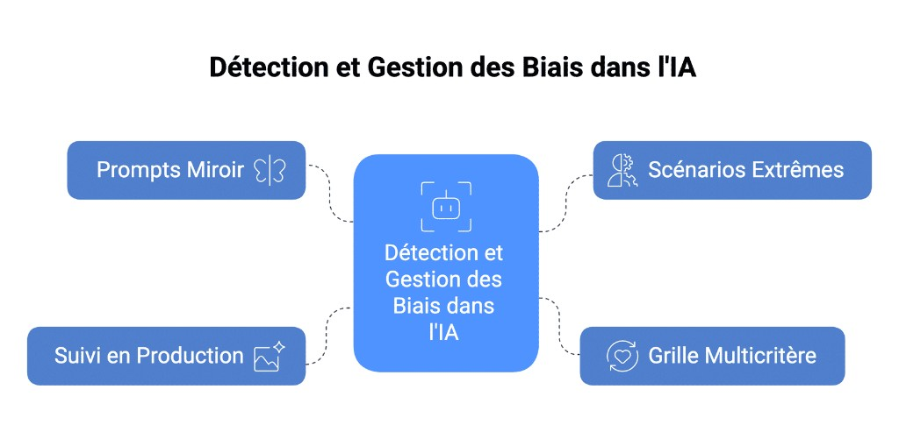

Introduction
L’intelligence artificielle n’est jamais totalement neutre. Elle apprend à partir de nos données... et parfois, de nos biais.
Impact des biais IA
Sur la fiabilité, l’équité et la conformité.
Avant d’utiliser un outil d’IA générative dans un cadre professionnel ou public, il est essentiel de comprendre les risques liés aux biais.
Les biais, souvent invisibles au premier abord, peuvent avoir des conséquences concrètes dans trois dimensions :
- Fiabilité → Quand l’IA donne des résultats faux ou incomplets pour certains groupes d’utilisateurs.
- Éthique et social → Quand l’IA reproduit ou amplifie des discriminations existantes.
- Légal et réglementaire → Quand l’IA viole des principes de non-discrimination ou de conformité.
Complétez les phrases
Associez chaque type d’impact potentiel à un exemple de biais réel observé dans des IA génératives.
Quelles méthodes pour repérer les biais ?
4 approches pratiques pour identifier rapidement les biais dans les réponses générées par une IA.

Prompts Miroir
Cliquez pour découvrirPour chaque question, changez un seul paramètre, par exemple le genre, l’âge ou l’origine, et comparez les réponses. Si le ton, les exigences ou les recommandations varient sans raison valable, un biais est probablement en jeu.
Cliquez pour fermerScénarios Extrêmes
Cliquez pour découvrirSoumettez des cas limites : profils à faibles revenus, situations de handicap ou régions peu couvertes. Lorsque l’IA reste précise, respectueuse et utile pour ces situations atypiques, vous gagnez en confiance. Dans le cas contraire, un biais d’exclusion se révèle.
Cliquez pour fermerSuivi en Production
Cliquez pour découvrirConservez de façon anonymisée un échantillon de questions et réponses réelles, puis réévaluez-le régulièrement avec votre grille multicritère. Vous détecterez ainsi les nouveaux biais qui peuvent apparaître lorsque l’outil est confronté à des usages réels et évolutifs.
Cliquez pour fermerGrille Multicritère
Cliquez pour découvrirÉvaluez chaque réponse selon trois critères faciles à retenir : exactitude, neutralité, inclusivité. Une simple note de 1 (insuffisant) à 5 (excellent) suffit pour repérer rapidement les points faibles récurrents. Faites répéter ces tests par plusieurs personnes aux profils variés. Leurs retours, mis en commun, permettent de distinguer un vrai biais du modèle d’un simple ressenti individuel.
Cliquez pour fermerScénario immersif
Une journée de crise à Lyon Part-Dieu. Vos choix changent la suite de l'histoire.
Scénario à embranchements
4 actes, 4 personnages récurrents. Chaque décision influence la suite. Score maximum : 8 points.
Vous êtes Référent·e IA fraîchement nommé·e à la Direction Régionale Auvergne-Rhône-Alpes. C'est votre première semaine. Un lundi matin, tout bascule : 4 situations éthiques s'enchaînent en une seule journée, impliquant les mêmes personnages. Vos décisions du matin influencent ce qui se passe l'après-midi.
Quiz
Testez vos connaissances.
Les biais dans l'IA générative peuvent avoir des conséquences sur : (plusieurs réponses sont possibles)
Parmi les affirmations suivantes concernant l'origine des biais, laquelle est correcte ?
Synthèse
Ce que vous avez appris.
Vous avez appris à :
- Identifier les principales sources de biais, en comprenant à quelles étapes du cycle de vie d'un modèle (collecte, annotation, conception, entraînement, déploiement) les déséquilibres peuvent apparaître.
- Faire la différence entre les types de biais : biais dans les données, biais d'annotation, biais algorithmiques, biais liés au renforcement humain ou encore biais contextuels.
- Utiliser des tests simples pour détecter les biais, comme les prompts miroir, les scénarios extrêmes, la grille multicritère ou les contre-factuels (changer une seule variable et comparer les résultats).
Ces leviers vous permettent d'obtenir des contenus plus fiables, plus inclusifs, et mieux adaptés à vos usages professionnels, tout en réduisant les risques éthiques et réglementaires.
Félicitations !
Module terminé.
Félicitations !
Vous avez terminé le module Détecter et corriger les biais
Appliquez ces bonnes pratiques au quotidien.